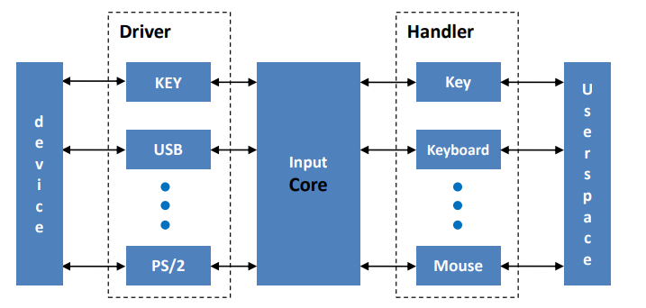
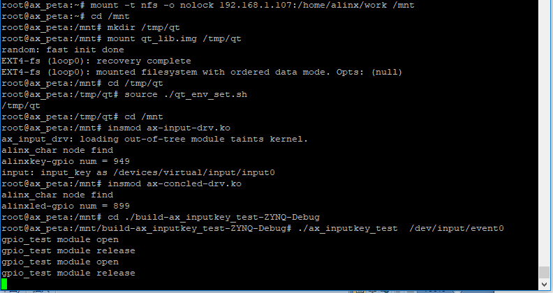
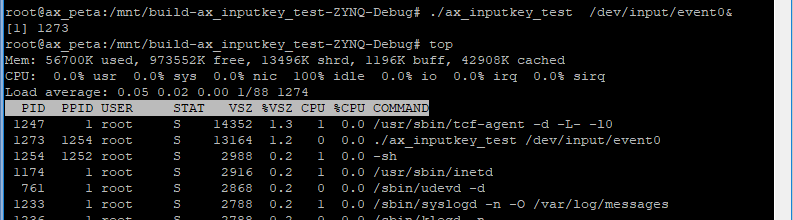

input子系统#
Linux支持的输入设备很多，如键盘、鼠标、触摸屏或简单的按键等等。这些输入设备的原理不尽相同，为了管理这些多样的输入设备，Linux内核提供了input子系统框架。
input子系统简介#
相较于前面学到paltform框架misc框架，input子系统框架的复杂度稍高。它分为事件层、核心层、设备驱动层，上中下三层，如下：
可以看出，input子系统中可以注册多个不同的输入设备。
Driver对应下层驱动，和各种输入设备对接。
Handler对应上层事件，通过设备节点文件和用户空间相对接。不同的handler设备节点文件名称也不同。
Core核心层负责上层和下层的协调，实现上下层的数据交互。下层的事件会激活整个系统，核心会上传事件到上层，最终传递到用户空间。
input子系统解决了不同输入设备与应用层数据交互的问题，为输入设备驱动开发提供了很多方便。
input子系统驱动框架的使用#
input子系统的核心是在文件drivers/input/input.c中实现的。我们找到其中2416行的input_init()函数。
static int __init input_init(void)
{
int err;
err = class_register(&input_class);
if (err) {
pr_err("unable to register input_dev class\n");
return err;
}
err = input_proc_init();
if (err)
goto fail1;
err = register_chrdev_region(MKDEV(INPUT_MAJOR, 0),
INPUT_MAX_CHAR_DEVICES, "input");
if (err) {
pr_err("unable to register char major %d", INPUT_MAJOR);
goto fail2;
}
return 0;
fail2: input_proc_exit();
fail1: class_unregister(&input_class);
return err;
}
……
subsys_initcall(input_init);
……
2452行用subsys_initcall(input_init)标记了input_init函数，subsys_initcall作用于module_init类似用于标记驱动入口函数，区别在于subsys_initcall标记的是静态加载的驱动。也就是说input_init函数是系统启动后就会执行的函数，那我们看看input_init函数中做了什么工作。
2420行先是注册了input_class。
2430行使用主设备号INPUT_MAJOR注册了input设备，INPUT_MAJOR定义在文件include/uapi/linux/major.h 中，值为13。
也就是说我们使用input子系统来加载输入设备，不需要再注册字符设备，只需要向input子系统注册input_dev就可以了。
接下来我们介绍一下什么是input_dev，input子系统具体如何使用。
申请input_dev结构体变量
使用input子系统需要注册一个input设备，input_dev结构体就是用于表示input设备，定义在文件include/linux/input.h中，如下:
struct input_dev {
const char *name;
const char *phys;
const char *uniq;
struct input_id id;
unsigned long propbit[BITS_TO_LONGS(INPUT_PROP_CNT)];
unsigned long evbit[BITS_TO_LONGS(EV_CNT)];
unsigned long keybit[BITS_TO_LONGS(KEY_CNT)];
unsigned long relbit[BITS_TO_LONGS(REL_CNT)];
unsigned long absbit[BITS_TO_LONGS(ABS_CNT)];
unsigned long mscbit[BITS_TO_LONGS(MSC_CNT)];
unsigned long ledbit[BITS_TO_LONGS(LED_CNT)];
unsigned long sndbit[BITS_TO_LONGS(SND_CNT)];
unsigned long ffbit[BITS_TO_LONGS(FF_CNT)];
unsigned long swbit[BITS_TO_LONGS(SW_CNT)];
……
bool devres_managed;
};
129~137行是一些事件的位图，用于传递事件。可选的事件类型定义在文件include/uapi/linux/input-event-codes.h中。第一个位图evbit用于设置启用下面的哪种事件，比如我们需要使用keybit，就需要把evbit中对应的位置起来对应的宏定义为EV_KEY。
申请input_dev结构体变量使用下面的函数：
struct input_dev *input_allocate_device(void) |
释放input_dev结构体变量使用下面的函数：
void input_free_device(struct input_dev *dev) |
初始化input_dev结构体变量
申请input_dev成功后，首先要初始化一些成员变量，如name字段。主要需要初始化的是事件位图。设置事件位图的方法针对我们的实验介绍以下几种：
2.1) 直接赋值，如input_dev->evbit[0] = BIT_MASK(EV_KEY);
2.2) 使用__set_bit()方法，如__set_bit(EV_KEY, input_dev->evbit);
清除事件使用__clear_bit(EV_KEY, input_dev->evbit);
- 2.3) 使用input_set_capability方法，如input_set_capability(input_dev,
EV_KEY, KEY_Q)。这个函数实际上还是调用的__set_bit方法，这一句实际上等价于__set_bit(KEY_Q, input_dev->keybit);。input_set_capability相当于是对evbit的进一步设置，因此这个函数不可以设置evbit。
注册input_dev结构体变量
初始化完成后，就可以向系统注册input_dev结构体变量了，使用函数：
int input_register_device(struct input_dev *dev) |
返回0注册成功，返回负值注册失败。
相对的注销使用下面的函数：
void input_unregister_device(struct input_dev *dev) |
注意，input_register_device函数注册成功后，如果需要释放input_dev结构体，需要先用input_unregister_device再调用input_free_device。
输入事件上报
设置好input_dev结构体变量之后，就可以通过这个变量来上报捕捉到的输入事件给内核，使用函数：
void input_event(struct input_dev *dev, unsigned int type, unsigned int code, int value) |
参数说明：
dev：input_dev结构体指针；
type：上报的事件类型，可选值为Event types，定义在文件include/uapi/linux/input-event-codes.h中的37~48行。
code：事件码，定义在文件include/uapi/linux/input-event-codes.h中，根据type的至来选择，比如type为EV_KEY时，code可选KEY_0、KEY_1等等。
value：事件对应的值，比如按键事件中，可以规定一个值表示案件被按下或松开。
input_event()函数可以上报所有的事件类型，Linux内核还提供了一些针对性的事件上报函数，实际上都是对input_event()函数的封装。
上报之后，还需要使用下面的函数来提交到input子系统：
void input_sync(struct input_dev *dev); |
dev为设置好的input_dev结构体变量。
input子系统应用程序的使用#
驱动上报了输入事件后，应用程序就可以获取到输入事件。获取输入时间使用read()方法。但是输入参数较为特殊，需要使用结构体变量input_event。input_event定义在文件include/uapi/linux/input.h中，如下 :
struct input_event { struct timeval time; __u16 type; __u16 code; __s32 value; }; |
time表示时间，timeval结构体有两个成员，分别表示秒和微妙。
type、code、value和前面讲的input_event()函数的输入参数相对应。
实验#
本章的实验在 中断 那一章节按键实验驱动代码基础上修改。
原理图#
和 gpio输入 章节相同。
设备树#
和 gpio输入 章节相同。
驱动程序#
使用 petalinux新建名为”ax-input-drv”的驱劢程序，并执行 petalinux-config -c rootfs 命令选上新增的驱动程序。
在 ax-input-drv.c 文件中输入下面的代码：
#include <linux/kernel.h>
#include <linux/module.h>
#include <linux/init.h>
#include <linux/types.h>
#include <linux/errno.h>
#include <linux/cdev.h>
#include <linux/of.h>
#include <linux/of_address.h>
#include <linux/of_gpio.h>
#include <linux/device.h>
#include <linux/delay.h>
#include <linux/init.h>
#include <linux/gpio.h>
#include <linux/semaphore.h>
#include <linux/timer.h>
#include <linux/of_irq.h>
#include <linux/irq.h>
#include <linux/interrupt.h>
#include <linux/input.h>
#include <asm/uaccess.h>
#include <asm/mach/map.h>
#include <asm/io.h>
/* 设备节点名称 */
#define INPUT_DEV_NAME "input_key"
/* 把驱动代码中会用到的数据打包进设备结构体 */
struct alinx_char_dev {
dev_t devid; //设备号
struct cdev cdev; //字符设备
struct class *class; //类
struct device *device; //设备
struct device_node *nd; //设备树的设备节点
spinlock_t lock; //自旋锁变量
int alinx_key_gpio; //gpio号
unsigned int irq; //中断号
struct timer_list timer; //定时器
struct input_dev *inputdev; //input_dev结构体
unsigned char code; //input事件码
};
/* 声明设备结构体 */
static struct alinx_char_dev alinx_char = {
.cdev = {
.owner = THIS_MODULE,
},
};
/* 中断服务函数 */
static irqreturn_t key_handler(int irq, void *dev)
{
/* 按键按下或抬起时会进入中断 */
struct alinx_char_dev *cdev = (struct alinx_char_dev *)dev;
/* 开启50毫秒的定时器用作防抖动 */
mod_timer(&cdev->timer, jiffies + msecs_to_jiffies(50));
return IRQ_RETVAL(IRQ_HANDLED);
}
/* 定时器服务函数 */
void timer_function(struct timer_list *timer)
{
unsigned long flags;
struct alinx_char_dev *dev = &alinx_char;
/* value用于获取按键值 */
unsigned char value;
/* 获取锁 */
spin_lock_irqsave(&dev->lock, flags);
/* 获取按键值 */
value = gpio_get_value(dev->alinx_key_gpio);
if(value == 0)
{
/* 按键按下, 状态置1 */
input_report_key(dev->inputdev, dev->code, 1);
input_sync(dev->inputdev);
}
else
{
/* 按键抬起 */
input_report_key(dev->inputdev, dev->code, 0);
input_sync(dev->inputdev);
}
/* 释放锁 */
spin_unlock_irqrestore(&dev->lock, flags);
}
/* 模块加载时会调用的函数 */
static int __init char_drv_init(void)
{
/* 用于接受返回值 */
u32 ret = 0;
/* 初始化自旋锁 */
spin_lock_init(&alinx_char.lock);
/* 获取设备节点 */
alinx_char.nd = of_find_node_by_path("/alinxkey");
if(alinx_char.nd == NULL)
{
printk("alinx_char node not find\r\n");
return -EINVAL;
}
else
{
printk("alinx_char node find\r\n");
}
/* 获取节点中gpio标号 */
alinx_char.alinx_key_gpio = of_get_named_gpio(alinx_char.nd, "alinxkey-gpios", 0);
if(alinx_char.alinx_key_gpio < 0)
{
printk("can not get alinxkey-gpios");
return -EINVAL;
}
printk("alinxkey-gpio num = %d\r\n", alinx_char.alinx_key_gpio);
/* 申请gpio标号对应的引脚 */
ret = gpio_request(alinx_char.alinx_key_gpio, "alinxkey");
if(ret != 0)
{
printk("can not request gpio\r\n");
return -EINVAL;
}
/* 把这个io设置为输入 */
ret = gpio_direction_input(alinx_char.alinx_key_gpio);
if(ret < 0)
{
printk("can not set gpio\r\n");
return -EINVAL;
}
/* 获取中断号 */
alinx_char.irq = gpio_to_irq(alinx_char.alinx_key_gpio);
/* 申请中断 */
ret = request_irq(alinx_char.irq,
key_handler,
IRQF_TRIGGER_FALLING | IRQF_TRIGGER_RISING,
"alinxkey",
&alinx_char);
if(ret < 0)
{
printk("irq %d request failed\r\n", alinx_char.irq);
return -EFAULT;
}
__init_timer(&alinx_char.timer, timer_function, 0);
/* 设置事件码为KEY_0 */
alinx_char.code = KEY_0;
/* 申请input_dev结构体变量 */
alinx_char.inputdev = input_allocate_device();
alinx_char.inputdev->name = INPUT_DEV_NAME;
/* 设置按键事件 */
__set_bit(EV_KEY, alinx_char.inputdev->evbit);
/* 设置按键重复事件 */
__set_bit(EV_REP, alinx_char.inputdev->evbit);
/* 设置按键事件码 */
__set_bit(KEY_0, alinx_char.inputdev->keybit);
/* 注册input_dev结构体变量 */
ret = input_register_device(alinx_char.inputdev);
if(ret) {
printk("register input device failed\r\n");
return ret;
}
return 0;
}
/* 卸载模块 */
static void __exit char_drv_exit(void)
{
/* 删除定时器 */
del_timer_sync(&alinx_char.timer);
/* 释放中断号 */
free_irq(alinx_char.irq, &alinx_char);
/* 注销input_dev结构体变量 */
input_unregister_device(alinx_char.inputdev);
/* 释放input_dev结构体变量 */
input_free_device(alinx_char.inputdev);
}
/* 标记加载、卸载函数 */
module_init(char_drv_init);
module_exit(char_drv_exit);
/* 驱动描述信息 */
MODULE_AUTHOR("Alinx");
MODULE_ALIAS("alinx char");
MODULE_DESCRIPTION("INPUT LED driver");
MODULE_VERSION("v1.0");
MODULE_LICENSE("GPL");
重点关注加粗的部分。
19行包含input.h头文件。
38行在设备结构体中增加struct input_dev型指针成员变量。
39行添加一个事件码code。
76行在timer去抖的回掉函数中，如果案件被按下则使用input_report_key()函数上报事件。input_report_key()函数定义在文件include/linux/input.h中，内容很简单，就时调用了一下input_event(dev, EV_KEY, code, !!value)；函数专门用于按键的时间上报。input_report_key()的第一个参数为input_dev结构体类型的指针，也就是我们驱动中申请的输入设备，第二个参数时事件码，第三个参数为事件对应的值。
77行调用input_sync(dev->inputdev)提交上报。
82~83行同理上报按键抬起的事件，我们这里用第三个参数value来区分按下和抬起，1表示按下，0表示抬起。
在驱动入口函数中，153行之前，就是和 中断 那一章一样的获取设备树中信息，设置中断和定时器。
154行个事件码赋值为KEY_0，之后我们在写应用程序时，需要对应到KEY_0这个值。
157行使用input_allocate_device()函数申请结构体变量。
159~165行初始化input_dev结构体变量。先给name赋值。
161行调用__set_bit把evbit中的按键事件置1。163行同理设置重复按键。
165行设置按键事件的事件码为KEY_0。
在驱动出口函数中，185行先调用input_unregister_device注销input_dev，187行再调用input_free_device释放input_dev结构体变量的空间。
全程我们没有再去实现file_operations设备操作函数集，都是使用input子系统中的操作函数。也没有再去注册字符设备，所以使用input子系统，相当于是向input子系统注册设备，而不是在向内核注册。我们直接交流的对象是input子系统而不是内核，和内核的交互，全权交给input子系统了，这点和前面说的misc设备框架是有所区别的。
15.3.4 测试程序#
新建 QT 工程名为”ax_inputkey_test”，新建 main.c，输入下面的代码：
#include "stdio.h"
#include "unistd.h"
#include <fcntl.h>
#include <linux/input.h>
static struct input_event inputevent;
/* 点亮火熄灭led */
int led_change_sts()
{
int fd, ret;
static char led_value = 0;
fd = open("/dev/gpio_leds", O_RDWR);
if(fd < 0)
{
printf("file /dev/gpio_leds open failed\r\n");
}
led_value = !led_value;
ret = write(fd, &led_value, sizeof(led_value));
if(ret < 0)
{
printf("write failed\r\n");
}
ret = close(fd);
if(ret < 0)
{
printf("file /dev/gpio_leds close failed\r\n");
}
return ret;
}
int main(int argc, char *argv[])
{
int fd;
int err = 0;
char *filename;
filename = argv[1];
/* 验证输入参数个数 */
if(argc != 2) {
printf("Error Usage\r\n");
return -1;
}
/* 打开输入的设备文件, 获取文件句柄 */
fd = open(filename, O_RDWR);
if(fd < 0) {
/* 打开文件失败 */
printf("can not open file %s\r\n", filename);
return -1;
}
while(1)
{
err = read(fd, &inputevent, sizeof(inputevent));
if(err > 0)
{
switch(inputevent.type)
{
case EV_KEY:
if(KEY_0 == inputevent.code)
{
if(0 == inputevent.value)
{
/* 按键抬起 */
err = led_change_sts();
}
else
{
/* 按键按下 */
}
}
else
{
/* ignore */
}
break;
default :
/* ignore */
break;
}
if(err < 0)
{
printf("led open filed");
}
}
else
{
printf("get data failed\r\n");
}
}
return 0;
}
第4行包含头文件input.h。
第6行定义input_event结构体变量以获取事件。
8~35行把点亮或熄灭led的代码拎出来，这样看main函数能清楚些。
main函数中61行，调用read函数读取事件，这里第二个参数传递的就是input_event结构体变量。
64行先判断事件类型，如果是EV_KEY类型，则进入66行的case，其他类型忽略。
67行再判断事件码是不是KEY_0，不是则忽略，是就继续往下判断。
69行判断事件对应的值，驱动代码中我们说过0代表按键抬起，1表示按下。按键抬起是一次按键的结束，所以在按键抬起后，我们切换一次led的状态。
运行测试#
input子系统框架下生成的设备节点文件在路径/dev/input下，在使用insmod加载input设备时，系统会提示”input: input_key as /devices/virtual/input/input0”，一般设备文件会对应这里的input0，也就是/dev/input/event0。
测试方法步骤如下：
mount -t nfs -o nolock 192.168.1.107:/home/alinx/work /mnt cd /mnt mkdir /tmp/qt mount qt_lib.img /tmp/qt cd /tmp/qt source ./qt_env_set.sh cd /mnt insmod ax-input-drv.ko insmod ax-concled-drv.ko cd ./build-ax_inputkey_test-ZYNQ-Debug ./ax_inputkey_test /dev/input/event0 |
IP 和路径根据实际情况调整。
串口工具中的调试结果如下：
可以看一下input子系统下，按键的cpu占用量，也是几乎为零。
